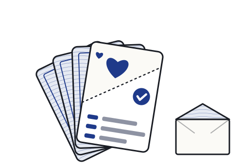

GetMyRight
GetMyRight
Sie müssen das nicht allein schaffen.
Sie haben bei Online-Casinos oder Sportwetten Geld verloren? Das passiert vielen – und es ist kein Grund, sich zu schämen. Viele dieser Anbieter hatten keine deutsche Erlaubnis. Deshalb können Sie Ihr Geld unter Umständen zurückfordern – was Gerichte dazu bisher sagen. GetMyRight hilft Ihnen jetzt und kostenlos, Ihre Angaben in Ruhe vorzubereiten, damit eine spezialisierte Kanzlei Ihren Fall prüfen kann. Unverbindlich – und jeden Schritt entscheiden Sie selbst.
GetMyRight ist keine Kanzlei und gibt keine Rechtsberatung. Eine Rückzahlung kann nicht garantiert werden.

Gibt es eine Chance, Ihr Geld zurückzubekommen?
Möglicherweise ja. Zwei Gründe spielen dabei eine wichtige Rolle:
- Viele Anbieter hatten keine deutsche Erlaubnis. Online-Casinospiele waren in Deutschland bis zum 30. Juni 2021 verboten; seitdem brauchen Anbieter eine deutsche Erlaubnis (§ 4 Glücksspielstaatsvertrag 2021). Die Gemeinsame Glücksspielbehörde der Länder zählte allein 2024 858 deutschsprachige Seiten von 212 Veranstaltern ohne Erlaubnis.1 2
- Sperren wurden nicht immer beachtet. Anbieter müssen gesperrte Spielerinnen und Spieler über die Sperrdatei OASIS ausschließen (§ 4 Abs. 5 Glücksspielstaatsvertrag 2021). Dass es dabei Verstöße gibt, zeigt ein Verfahren des Fachverbands Glücksspielsucht vor dem Landgericht Berlin (2026).1 3 Wie Sie Ihre eigene Sperre nachweisen, erklärt unsere Anleitung zur OASIS-Selbstauskunft.
Was Gerichte bisher sagen
Mehrere Gerichte haben sich in den letzten Jahren mit Verlusten bei Anbietern ohne deutsche Erlaubnis befasst. Diese Entscheidungen deuten darauf hin, dass eine Rückforderung möglich sein kann – sie ersetzen aber keine Prüfung Ihres Einzelfalls.
Europäischer Gerichtshof, Urteil vom 16. April 2026 (C-440/23): Das EU-Recht steht dem deutschen Verbot von Online-Casinospielen nicht entgegen – auch nicht, wenn ein Anbieter eine Lizenz aus einem anderen EU-Staat hatte. Klagen auf Erstattung der Einsätze sind grundsätzlich mit dem EU-Recht vereinbar.
Pressemitteilung des EuGH (PDF) (externer Link, öffnet in neuem Tab) · beck-aktuell (externer Link, öffnet in neuem Tab)
Bundesgerichtshof, Beschluss vom 25. Juli 2024 (I ZR 90/23): Der BGH hält Sportwetten-Verträge mit Anbietern ohne deutsche Erlaubnis grundsätzlich für nichtig und eine Rückzahlung für möglich. Er hat dem Europäischen Gerichtshof dazu Fragen vorgelegt; dessen Antwort steht noch aus.
Oberlandesgericht Braunschweig, Urteil vom 15. Januar 2026 (10 U 13/25): Das Gericht hat einem Spieler Schadensersatz für Verluste bei einem Online-Casino mit Sitz in Curaçao zugesprochen.
Bundesgerichtshof, Leitentscheidungsverfahren (I ZR 216/25, Online-Casino): Der BGH hat am 17. September 2026 verhandelt. Sein Urteil ist für den 28. Januar 2027 angekündigt.
Stand: 23. November 2026
Quellen
- Glücksspielstaatsvertrag 2021, § 4 – Zur Quelle (externer Link, öffnet in neuem Tab)
- Gemeinsame Glücksspielbehörde der Länder: Tätigkeitsbericht 2024 (Pressemitteilung, 27.06.2025) – Zur Quelle (externer Link, öffnet in neuem Tab)
- rbb24, August 2026: Verfahren des Fachverbands Glücksspielsucht gegen einen Berliner Sportwetten-Anbieter – Zur Quelle (externer Link, öffnet in neuem Tab)
Sie sind nicht allein
 GetMyRight
GetMyRight
Warum Sie sich nicht schämen müssen
Wer viel Geld verloren hat, schämt sich oft und spricht mit niemandem darüber. Dabei gibt es dafür keinen Grund.
- Es kann jeden treffen. Glücksspielsucht ist eine anerkannte Erkrankung – keine Charakterschwäche und kein persönliches Versagen.
- Die Anbieter tragen Verantwortung. Sie sind gesetzlich verpflichtet, Spielerinnen und Spieler zu schützen.
- Hinschauen ist mutig. Dass Sie sich informieren, ist bereits ein Schritt nach vorn.
Wenn es Ihnen gerade nicht gut geht
Die kostenlose und anonyme Telefonberatung erreichen Sie unter 0800 137 27 00. Online finden Sie Hilfe bei Check dein Spiel.
So funktioniert es
Sie tragen sich ein
Name und E-Mail genügen. Angaben zu Anbieter, Zeitraum oder OASIS-Sperre können Sie später ergänzen – oder weglassen. Sie gehen keinerlei Verpflichtung ein.
Wir ordnen Ihre Angaben
Unsere Software bereitet Ihre Angaben und Unterlagen übersichtlich auf. Kontoauszüge können Sie jederzeit nachreichen.
Eine Kanzlei prüft Ihren Fall
Eine spezialisierte Partnerkanzlei sieht sich Ihren Fall an und meldet sich bei Interesse bei Ihnen. Ob Sie ein Mandat erteilen, entscheiden allein Sie.
Noch keine Unterlagen? Kein Problem – wie Sie sie besorgen, zeigt unsere Anleitung.
 GetMyRight
GetMyRight
Ihre Daten und unser Versprechen
Eine Kanzlei bekommt zuerst nur einen Ausschnitt Ihres Datensatzes zu sehen. Ihr Name und Ihre Kontaktdaten bleiben hinter dem Sicherheitsmuster.
- Sichtbar im Fenster: Anbieter, Zeitraum, Größenordnung der Verluste und Region (Bundesland).
- Nicht sichtbar: Name, E-Mail, Telefon und Unterlagen.
- Erst nach Ihrer gesonderten Einwilligung: Kontaktdaten und von Ihnen freigegebene Unterlagen gehen an die Kanzlei, die den Fall reserviert.
Das ganze Blatt: alles, was Sie freiwillig angeben. Name und Kontakt gehören nicht zum Ausschnitt.Im Sichtfenster stehen nur Anbieter, Zeitraum, Größenordnung und Region.
Sicht der Kanzlei
Beispieldatensatz, alle Angaben sind erfunden.
Unser Versprechen
- Kostenlos für Sie. Eintragung, Vorbereitung und Weitergabe an eine Partnerkanzlei kosten Sie nichts.
- Freiwillig. Pflicht sind nur Name, E-Mail und Ihre Einwilligung. Alles andere können Sie überspringen.
- Ihre Entscheidung. Ob Sie ein Mandat erteilen, entscheiden allein Sie.
- Keine Rechtsberatung. Wir prüfen keine Ansprüche rechtlich (§ 2 RDG). Das tun ausschließlich zugelassene Rechtsanwältinnen und Rechtsanwälte.
- Keine Erfolgsgarantie. Ob und in welcher Höhe eine Rückzahlung möglich ist, hängt vom Einzelfall ab.
- Keine Provision pro Mandat. Kanzleien zahlen eine feste Software-Lizenz, unabhängig von Anzahl oder Höhe einzelner Mandate.
 GetMyRight
GetMyRight
Sebastians Weg – eine Geschichte, wie sie viele erleben
Musterfall (Beispiel)Illustratives Beispiel: Name und Einzelheiten sind erfunden. Jeder Fall ist anders, eine Rückzahlung kann nicht zugesagt werden.
Die Verlustphase
Sebastian, 38, spielte erst gelegentlich Online-Slots am Feierabend. Über drei Jahre wurden die Einsätze größer – am Ende fehlten ihm rund 40.000 Euro.
Der Entschluss
In einem ehrlichen Gespräch mit seiner Schwester sprach er zum ersten Mal aus, wie es ihm ging. Er beschloss: Ich höre auf – und hole mir Hilfe.
Hilfe und Schutz
Er rief die kostenlose Telefonberatung an, fand eine Beratungsstelle in seiner Nähe und ließ sich im Sperrsystem OASIS sperren.
Ein neuer Gedanke
In der Beratung erfuhr er, dass Verluste bei Anbietern ohne deutsche Erlaubnis unter Umständen zurückgefordert werden können. Er trug sich mit Name und E-Mail bei GetMyRight ein.
In Ruhe vorbereiten
In den folgenden Wochen ergänzte er Anbieter, Zeitraum und Verlusthöhe und besorgte mit unserer Anleitung seine Kreditkartenabrechnungen.
Prüfung
Eine Partnerkanzlei prüfte seinen Fall und übernahm das Mandat. Nach einigen Monaten erhielt Sebastian einen Teil seiner Verluste zurück – wichtiger war ihm, wieder Boden unter den Füßen zu haben.
Für Partnerkanzleien: vorbereitete Fälle statt Vorsortierung
GetMyRight bündelt freiwillige Angaben von Betroffenen und stellt sie Ihrer Kanzlei vorab pseudonymisiert bereit. Sie sehen Anbieter, Zeitraum, geschätzte Verlusthöhe und Wohnregion – und entscheiden selbst, welche Fälle Sie übernehmen.
- Einheitlich aufbereitet. Anbieter, Lizenzsitz, Spielzeitraum, Verlustgröße, Rechtsschutz und Belegstand in einer Struktur, mit klarem Qualitätsstatus.
- Eigene Auswahl und Reservierung. Ihre Kanzlei filtert, sichtet und reserviert passende Datensätze; Prüfung und Mandatsannahme liegen allein bei Ihnen.
- Feste Software-Lizenz statt Provision. Keine Einzelprovision pro Mandat und keine erfolgsabhängige Vergütung (§ 49b Abs. 3 BRAO).
Konditionen besprechen wir persönlich nach Ihrer unverbindlichen Registrierung.